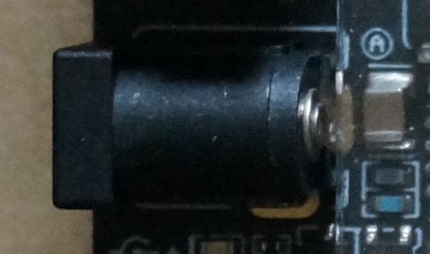
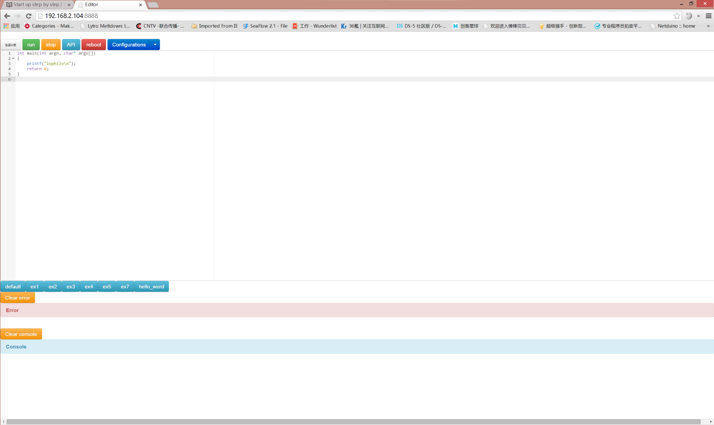
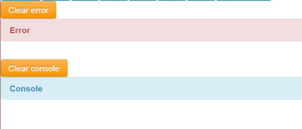

Start up step by step
1 Plug in the power cable, usb and net cable

2 Press the power button.

Press the gray button to power on. Pink one is the reset button. After power on the usb device of the broad will be recognize as a serical port.
3 login the console
Download a putty software and connect the serial port, the bandrate is 115200. www.putty.org
4 get the ip address from console
Run ifconfig in shell console
root@hostname:~$ ifconfig
eth0 Link encap:Ethernet HWaddr 48:02:2a:b6:0c:0a
inet addr:192.168.2.109 Bcast:192.168.2.255 Mask:255.255.255.0
UP BROADCAST RUNNING MULTICAST MTU:1500 Metric:1
RX packets:35765 errors:0 dropped:355449 overruns:0 frame:0
TX packets:3800 errors:0 dropped:0 overruns:0 carrier:0
collisions:0 txqueuelen:1000
RX bytes:10828535 (10.8 MB) TX bytes:703119 (703.1 KB)
lo Link encap:Local Loopback
inet addr:127.0.0.1 Mask:255.0.0.0
UP LOOPBACK RUNNING MTU:16436 Metric:1
RX packets:153 errors:0 dropped:0 overruns:0 frame:0
TX packets:153 errors:0 dropped:0 overruns:0 carrier:0
collisions:0 txqueuelen:0
RX bytes:12822 (12.8 KB) TX bytes:12822 (12.8 KB)
The ip address of the broad is 192.168.2.109
5 get the ip address from router
You can also get the ip address of the broad from you router in the DHCP servier-> client list
ID 客户端名 MAC 地址 IP 地址 有效时间
1 lizhizhdeiPhone 0C-3E-9F-55-39-23 192.168.2.100 01:47:32
2 lizhizhou 60-45-BD-E9-29-BA 192.168.2.104 01:29:52
3 miniand 48-02-2A-B6-0C-0A 192.168.2.109 01:41:03
4 android-d005d5d5cbb83cc9 00-24-25-0E-E7-C8 192.168.2.101 01:53:23
5 ubuntu 00-0C-29-38-00-E1 192.168.2.102 01:15:16
The ip address of the broad is 192.168.2.109
6 load the Arduino IDE from the browser
Open a brower and type the address: http://(ip_addres_of_the_broad):8888 
7 Load a configuration
Select the drop-down list, you can choose the configuration of the broad. The broad will program the fgpa program based on your choice.
8 Load a example
Pree the blue butten under the program editor. You can load a program which is saved previously. The Ex1 example includes a RGB LED example.
int main(int argn, char* argv[])
{
init();
led(0, 255,0,0);
led(1, 255,0 ,255);
led(2, 0 ,255,255);
led(3, 255,255,0);
return 0;
}
9 Edit the code
Edit the code in the editor.
10 Check the api doc
Press the API button, you will see the API you can use in the program.
11 run the code
Press the run button, the program you write will download to the braod, compile and run in the broad. See the RGB led change its color by your control.

12 check the output and error message
The compile error will display in the error label and you can currect it. The output of the program will display in the log label

13 Save the code
Press the save button and input the file name. The program you wirte will save in the broad. And the code can be load by using load example stage.
14 Extend the broad.
Comming soon